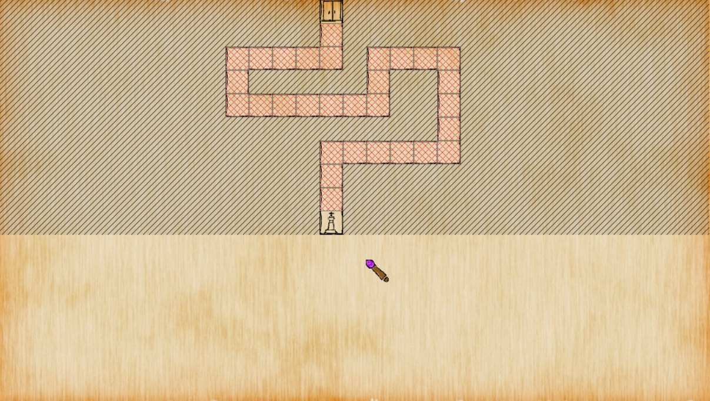
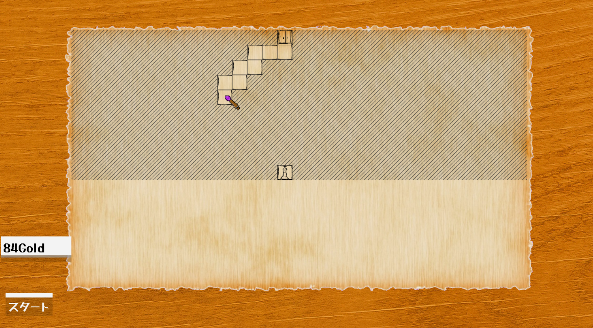
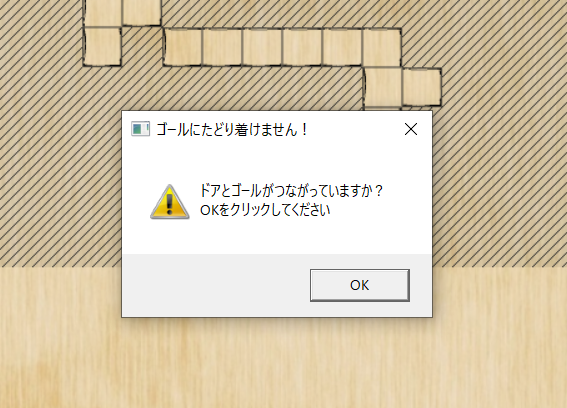
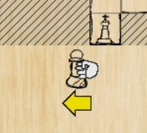
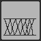

DungeonOwner
マニュアル
はじめに
このゲームはダンジョンを防衛するタワーディフェンスゲームです
自分でダンジョンマップを描く事ができます。
概要
敵に追われ、あなたはこのダンジョンのオーナーとして、ダンジョンの最深部に潜んでいます
ダンジョンに侵入する者たちから生き残る必要があります！
あなたはタイマンには強いので一人くらい侵入されたところで撃退できますが、複数人押し寄せてこられると勝ち目がありません・・・
ですが、あなたは共にダンジョンを守る配下を召喚できます！
ダンジョンを守り一日でも長く生き残りましょう！
起動方法
ファイル”Dungeon_owner”内にある、”Dungeon_owner.exe”を起動してください。

この”readme.txt”の階層にある、”start.bat”でも起動します。
警告はクリックで進めることができます。
操作説明
すべてマウスで操作可能です。
タイトル画面
左からゲームを始める、マニュアル（このファイル）を開く、設定、終了
マニュアルをゲームから直接開きたかったのですが未実装です
はじめる
はじめるをクリックすると、続きから遊ぶか聞かれます。
初回時に続きから遊ぶと、テンプレートが読み込まれます。
ダンジョン作成＝初日編＝
左クリックすると書き込むことができます。
右クリックすると削除することができます
長押しすると連続できます
描くにはゴールドを消費します
ダンジョンを設計したら、左下のスタートを押してダンジョンを作ることができます
攻略できないダンジョン（ゴールにたどり着かない）になる場合はダンジョンを作ることができません。
ゲーム開始

このゲームは画面上のゲートから侵入してくる探索者が、下にあるゴールにたどり着くのを防いで守りきる必要があります
ゴールはワンタッチではなく耐久があります。
ゲームを始めると、下にカードが流れてきます。

これは自分が持っている召喚ポイント（ゲージ）を使用して使用することができます。
マウス左クリックで掴む事が出来、マップ上にドラックしてドロップできます
また、この時右クリックをすることで黄色の矢印の向きが変わります。
これは移動するキャラの進行方向を決めることができます。
決めた方向に進めない場合は自動で移動可能な方向を判定します。
ポイントを消費して使えなくなったカードは削除されます。

ゲージがほとんどたまっているときポーン等のコストが安い駒を召喚することで
壁のカードが出てきます
防衛成功

防衛に成功するとリザルトになります
リザルトのトップで右クリックすると
次の日のダンジョン設計に移ります。
ここで各駒やダンジョンのサイズ、自分の耐久を上げることができます
ダンジョン作成＝二日目編＝

ダンジョンはあなたが生き残る度に一段階成長します
防衛成功時にマップ強化した場合も通常通り成長するので、1強化しておくと2強化されたことになります
なので、ゴールドをためて一気に強化することで１段の縛りなくダンジョンを設計できます
さて、初日と違う点で、設計した箇所が赤くなっています
前日に設計したものはすでにダンジョンとして構築されているので取り消すことができません
なので赤くないところに設計する必要があります。
強化しなくても毎回一段階大きくなるので、このままだと一本道になってしまうので、
このゲームは難易度が高めになってます
ゲームの流れは以上です
全部説明しちゃうと面白くなくなるので実際に遊んでみてください！
簡単な駒説明
ポーン

一番安い 壁に当たるとランダムに動く
ルーク

そこそこ固い戦車 ポーンよりはコストは高い程度 結構直進する。壁役にピッタリ
ビショップ

すごく弱い コストは高め その場から動かない しかし壁を貫通する魔法を放つ
罠

一度で壊れる コストは高い 罠なので動きません 地雷としてどうぞ。 固い敵にも強化すると・・・
柵
凄く硬い コストも高い 設置タイプ ダンジョン側は通行できる
おまけ
敵はランダム移動、ゴールを目指す、ゴール目指す＋魔法使いの３パターン
柵設置後毎回経路を再探索してる
柵設置後に新しく入った敵のうちゴールを目指す敵は、経路を考え直したあとなので回避してきたりする。
が、壊したほうがいいと判断すると柵を壊しに来る
↓クリアできない場合↓
ビショップは耐久は皆無ですが、遠距離攻撃なので、たどり着けない場所に設置すると、魔法使い以外対処できなくなるので実はすごく強いです